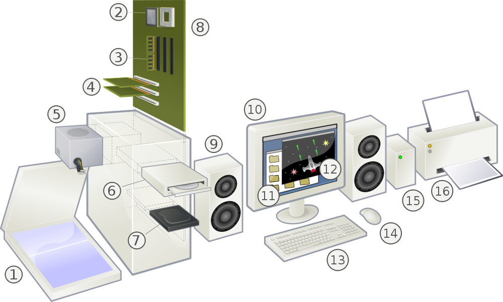

ComputerParts
1 Computer Parts

| Part # | English | Spanish | الْعَرَبيّة | 中文 | ქართულად | 日本語 |
|---|---|---|---|---|---|---|
| 1 | Scanner | Escáner plano | الماسح الضوئي | 影像掃描器 | イメージスキャナ | |
| 2 | CPU (Microprocessor) | CPU / Microprocesador | CPU /وحدة المعالجة المركزية | CPU / 中央处理器 | CPU/პროცესორი | CPU / マイクロプロセッサ |
| 3 | Main memory (RAM) | Memoria RAM | الذاكرة العشوائية | 内存 | ოპერატიული მეხსიერება (RAM) | メモリ |
| 4 | Expansion cards | Tarjetas (de expansión) | بطاقات التوسعة | 扩展接口 | დამატებითი პლატები | 拡張カード |
| 5 | Power supply unit | Fuente de alimentación | وحدة مزود الطاقة | 电源 | კვების ბლოკი | 電源ユニット |
| 6 | Optical disc drive | Lectora de discos ópticos | مشغل القرص الضوئي | 光驱 / 光盘驱动器 | ოპტიკური დისკის ძრავი | 光学ドライブ |
| 7 | Hard disk drive (HDD) | Disco duro (DD) | القرص الصلب | 硬盘 | მეორადი შემნახველი მეხსიერება (ხისტი დისკი) | ハードディスクドライブ |
| 8 | Motherboard | Tarjeta madre | اللوحة الأم | 主板 / 母板 | დედაპლატა | マザーボード |
| 9 | Speaker | Bocina, Altavoz | السماعات - مخرج الصوت | |||
| 10 | Monitor | Monitor | الشاشة | 显示器 / 显示屏 | მონიტორი | ディスプレイ |
| 11 | System software | برامج النظام | ||||
| 12 | Application software | البرامج التطبيقية | ||||
| 13 | Keyboard | Teclado | لوحة المفاتيح | 键盘 | კლავიატურა | キーボード |
| 14 | Mouse | Ratón | الفأرة | 鼠标 | თაგვი (მაუსი) | マウス |
| 15 | External hard disk | القرص الصلب الخارجي | ||||
| 16 | Printer (Inkjet, Laser) | Impresora (de Inyección, Láser) | الطابعة |
Date: 2011-04-04 11:31:05 CDT
HTML generated by org-mode 6.33x in emacs 23